Model Adequacy Checking
模型假設回顧
Multiple Linear Regression 基本假設
- 線性關係：
- 零均值：
- 等變異性：
- 獨立性：
- 常態性：
Model Adequacy（模型適當性） 上述假設的有效性
全域統計量的局限性
標準摘要統計量（如 或 統計量、）是「全域」模型性質，通常無法偵測：
- 偏離基本假設的情況
- 也無法確保模型適當性
Residual Analysis
動機。 之前的推論都基於 及 的假設，但收集到的數據未必符合。因為 本身無法觀察，只能用它的「觀測值」——殘差 ——來檢查模型是否適合數據，這就是模型診斷 (Diagnostics)。若診斷後發現模型不適合，則用模型補救 (Remedial Techniques) 修正，見 Transformation and Weighting。核心想法是：當模型正確時，殘差應該符合特定性質；若殘差圖嚴重違反這些性質，就有理由懷疑模型不適合數據。
Danger
任何模型都是錯誤的，但有些模型是有用的。不應該追求完美的模型，而是追求有用的模型。
為何殘差能反映誤差項的性質
（即 ）滿秩時 ，故
Danger
這裡 是實際觀察到的數據，而 是無法觀察到的隨機變量，因此不能用 表示，而應寫成 。 是建立模型用的等式，其中的 與實際觀察到的數據 概念上不同。
若 。令 （ 為列向量），則 ，即
因 ，故 。若 ，由 Chebyshev’s inequality， 幾乎必然接近其期望值 0，此時 化簡為 ——即當 時，殘差近似等於原始誤差。
Note：儘管 互相獨立， 卻不是：(1) ，故知道前 個殘差即可推出第 個；(2) ，但 通常不是對角矩陣且非滿秩。
由 ，且 ，故 平均約為 。當 時 ， 的非對角元素也趨近 0，殘差間相關性可忽略——這解釋了為何診斷方法在樣本數足夠大時才更可信。
Residuals 的定義與性質
Residual
表示數據與擬合值之間的偏差，可視為模型誤差 的「觀測值」
基本關係：
其中 是 hat matrix（投影矩陣性質）
Residuals 的統計性質
Residuals 的性質
期望值： （因為 ）
變異數結構： （見 線性變換下的方差公式：； 冪等故 ）
- 對比：
- Residuals 的變異數不相等
個別變異數： 其中 是 leverage
- 測量 到 X-space 重心的距離
常態分佈（若 ）：
- Residuals 之間有相關性
Remote Points 的影響
High Leverage Points 的效應
當 （見 leverage）較大時（即第 個觀測值遠離 X-space 重心）：
- 殘差較小： 較小， 也較小
- 預測誤差較大： 預測的不確定性增加
- 違反假設的可能性更高： Remote points 更容易違反模型假設
- 對 LSE 的影響大： LSE 高度受 remote points 影響，這些數據值會「拉動」預測朝向自己
延伸閱讀：
- 關於 high leverage points 如何影響模型估計，參見 Cook’s Distance
- 關於系統性的影響力測量方法，參見 影響力測度
Leverage Point vs Influential Point
Leverage Point（槓桿點）示意圖：
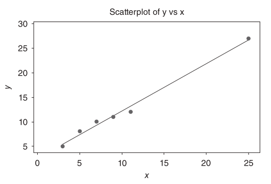
- 特徵： Regressor 值遠離其他觀測值
- 但： 觀測到的 response 值與基於其他數據的預測一致
- 影響： 不會顯著改變擬合直線
Influential Point（影響點）示意圖：
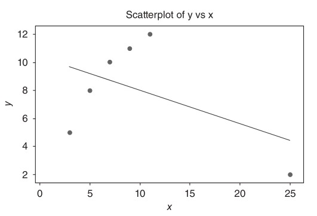
- 特徵： Regressor 值遠離其他觀測值
- 且： 觀測到的 response 值與僅基於其他數據點的預測不一致
- 影響： 將預測方程式拉向自己
深入分析： 參見 影響點的系統性分類
Residual Plots
模型診斷檢查主要基於對模型殘差的研究。繪製原始殘差和一個或多個標準化殘差。
殘差直方圖：理想狀況下殘差應服從期望值為 0 的常態分佈，故應對稱且集中於 0 附近。
理想：
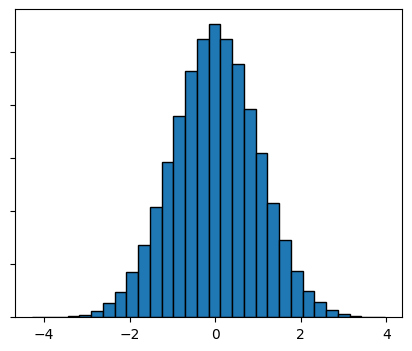
非理想：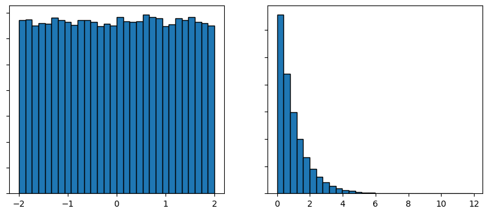
數據量少時直方圖未必呈現完美常態分佈，可直接觀察點是否集中於 0 附近即可。
時間序列圖：因 一定程度反映 的性質，而 與具體數據無關，理想下 （或標準化後）對 的點圖應呈現一條在 x 軸附近的水平區帶：
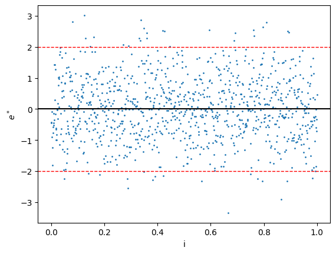
若出現線性或非線性趨勢，代表 所代表的變數（如時間）需要加入模型；若波動範圍有明顯變化，代表違反方差相等假設，可用 WLSE 或轉換解決（見 Transformation and Weighting）。 對 作圖同理，理想情況也應是水平區帶：
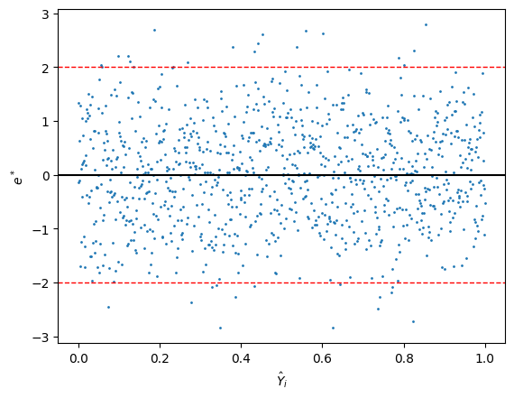
1. Normal Probability Plot（常態機率圖）
目的： 檢查數據是否服從常態分佈
Normal Probability Plot
繪製方法：
- 將 （以 尺度）對 （第 小的殘差）作圖
- 或使用 Q-Q plot： 將 對 作圖
判讀：
- 常態分佈的數據應近似落在直線上
- 直線（qqline）通過第一和第三四分位數
常見偏離模式：
-
理想情況 - 點落在直線上
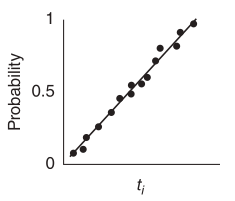
-
Heavy-tailed: 兩端點遠離直線
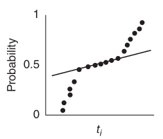
-
Light-tailed: 兩端點遠離直線
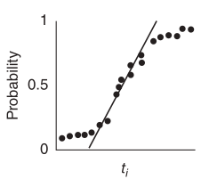
-
Negative skew: 左偏
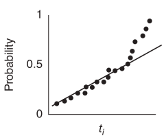
-
Positive skew: 右偏
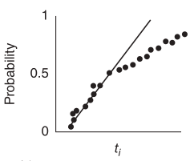
Normal Probability Plot 判讀準則
- 顯著偏離直線 分佈不是常態（因為 ）
- 即使 不是常態，圖形也常常看起來正常
- Histograms 和 boxplots 不適合用於檢查常態性
為何 ：q-q plot 為何是直線的推導
令 排序得 ，則 ，，故 （），這本身就是一個簡單線性回歸模型。
若 排序得 ，因 遞增，先排序再轉換與先轉換再排序等價，故 。
對 在 處做一階泰勒展開可得 ，故
即 ，也是一個簡單線性回歸模型： 是因變量， 是自變量，截距為 ，斜率為 。當 （即 ）時 ，，故截距 ，斜率 （用原始殘差）或 （用標準化殘差），這就是 q-q plot 理想情況下應為過原點直線的原因。
因常態分佈的 pdf 在遠離中心處很小，q-q plot 中心點密集、兩端稀疏，故判讀重點應放在兩端：中心可以不是直線，但兩端必須是直線。
理想：
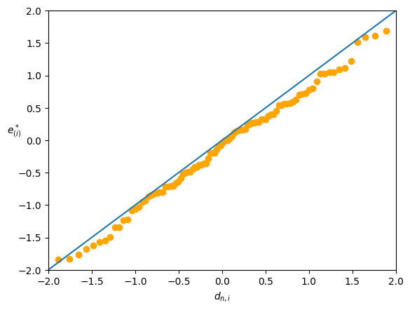
若兩端趨近 0（比理論直線平），代表數據分佈兩端較薄、中心較厚：
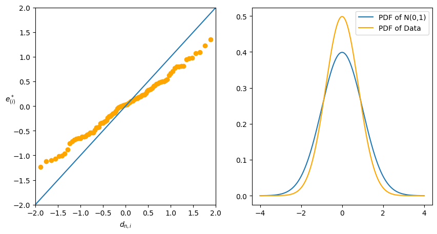
若兩端遠離 0（比理論直線陡），代表數據兩端較厚、中心較薄，這種情況更嚴重，代表容易出現極端值，甚至可能沒有有限期望值（如 Cauchy 分佈）：
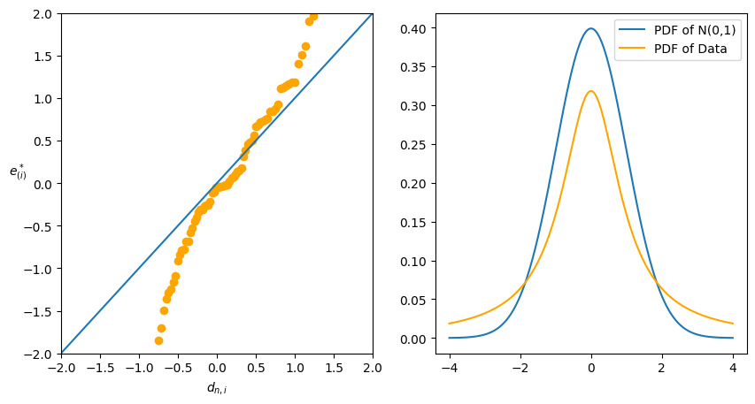
2. Residuals vs Fitted Values（殘差對擬合值圖）
繪製： 對 作圖
為何對 而非 作圖
- 且
- Residuals 與 fitted values 獨立
- 但
- 因此應該對 作圖
(a) 檢查非線性（Nonlinearity）
(b) 檢查非等變異性（Nonconstant Variance）
3. Residuals vs Regressors（殘差對 Regressor 圖）
(a) 對模型中的 Regressor
繪製： 對 作圖
目的： 檢查非等變異性和非線性
期望： 水平帶狀分佈（horizontal band）
(b) 對不在模型中的 Regressor
繪製： 對不在模型中的 作圖
用途： 若出現模式，可能表示加入該 regressor 能改善模型擬合
4. Residuals vs Time Order（殘差對時間序列圖）
繪製： 對 （時間順序）作圖
目的： 檢查誤差相關性（correlated errors）
Durbin-Watson Test
檢定統計量：
在誤差無相關的假設下，服從 分佈的線性組合
注意： 之間有相關性，但對圖形程序的影響通常可忽略
殘差圖診斷總結表
| 圖形 | 不理想模式 | 可能的補救措施 |
|---|---|---|
| vs Time Order | Funnel shape（漏斗狀） 表示非等變異性 | 使用 weighted least squares 或轉換 |
| Ascending/descending band （升/降帶） | 考慮加入時間的一階項 | |
| Curved band（曲線帶） | 考慮加入時間的一階和二階項 | |
| vs Fitted | Funnel shape | 使用 weighted least squares 或轉換 |
| Curved band | 考慮加入額外項到模型或轉換 | |
| vs | Funnel shape | 使用 weighted least squares 或轉換 |
| Ascending/descending band | 計算錯誤或錯誤省略 的一階效應未被移除 | |
| Curved band | 考慮加入額外項到模型或轉換 |
Scaling Residuals
使用標準化殘差有助於識別 outliers 或 extreme values（在某些方面與其他數據分離的觀測值）
1. Standardized Residuals
Standardized Residuals
動機：
- 平均而言，
- 因此 可用 估計
定義：
性質：
- 的均值為 0，變異數約為 1
- 可能表示 outlier
2. (Internally) Studentized Residuals
Internally Studentized Residuals
性質：
- 的均值為零，變異數為 1
- 較大 較大或 （見 leverage）較大
- 若 較大，該觀測值可能是 highly influential
- 詳見 影響力診斷
- Studentized residuals 通常比對應的 standardized residuals 更大
3. PRESS Residuals (Deleted Residuals)
PRESS Residuals
動機：
- 若第 個點異常，則：
- 若第 個點用於擬合模型，該點的殘差會較小
- 若第 個點不用於擬合模型，殘差能更好地反映該點的異常程度
定義：
其中 是基於除第 個觀測值外所有觀測值的擬合值（預測誤差）
重要性質：
PRESS Residuals 性質
與普通殘差的關係： （證明見 Appendix C.7, p.591）
變異數：
解釋： 與 之間的大差異表示：
- 模型對該數據擬合良好
- 但不包含該點建立的模型預測很差
Standardized PRESS Residual： 與 internally studentized residual 相同！
PRESS 統計量
PRESS (Prediction Error Sum of Squares)
用途： 測量回歸模型在預測新數據時的表現
- 較小的 PRESS 值優於較大的值
Prediction ：
解釋： 預期模型能解釋約 的新觀測值預測變異性
4. Externally Studentized Residuals (R-student)
Externally Studentized Residuals
動機：
- 是變異數的「內部」估計
- 使用基於除第 個觀測值外所有觀測值的變異數估計
定義：
其中
是刪除第 個觀測值後對 的估計（證明見 Appendix C.8, p.593）
重要性質：
R-student 性質
- 是刪除第 個觀測值後對 的估計
- 若 較大， 已排除它
- 分佈： 若 ，則
- 檢定： 較大的 （）是可疑的
- 正式檢定見 Appendix C.9, p.594
- 這些標準化殘差有助於偵測潛在 outliers
應用： R-student 在 DFFITS 和 DFBETAS 中用於測量影響力
Outlier Detection
Outlier
一個 extreme observation，在某些方面與其他數據分離
- 與其他觀測值有顯著差異的觀測值
- 對 outliers 可進行正式檢定
- 具有大殘差的點可能是 outliers
- 可通過移除這些點並重新擬合來評估影響
Outlier 類型示意圖
分類：
- High residual → outlier
- High leverage → outlier? → 可能是 influential point
偵測潛在 Outliers
指標：
- 較大的 , , , , 等
- Normal probability plot 的兩端遠離直線
Outliers 的處理
Outlier 處理原則
(1) 檢查異常行為的原因
- 例如：記錄錯誤、測量錯誤、儀器故障等
(2) 捨棄（可能的）outliers 並重新擬合模型
- 觀察結果（, 或 統計量, , 等）是否對 outliers 敏感
- 通常 不會改變太多
注意：
- 若模型對少數觀測值非常敏感，則不可接受
- 通常隨著 outliers 被排除， 或
- 但 可能不總是下降
參考： Example 4.7 (pp.153-155)
延伸閱讀： 關於 outliers 與 influential points 的系統性處理，參見 影響點處理
Tests for Constancy of Error Variance
動機。 當殘差圖呈現的波動變化不夠明顯，肉眼難以判斷是否違反等變異性假設時，需要正式的檢定方法。
Modified Levene Test (Brown-Forsythe Test)
適用於 SLR，且方差隨 單調變化，並假設 使得 之間的相關性可忽略（複迴歸下可對每個解釋變數 分別做此檢驗）。
將 筆數據按 值分成低、高兩組（各 筆，），殘差對應分成 。令 （），，。把 視為兩組觀測值，檢定其均值是否相等（若不等，代表兩組殘差的分散程度不同）：
在 （即兩組 母體均值相等）下，若 不太小，則 。在 level 下，若 ，拒絕 ，即殘差方差不等。
Breusch-Pagan Test
適用於樣本數足夠大，且假設 （即方差與 呈指數關係），故 。
對 做 的簡單線性迴歸得 ，並對 做 的簡單線性迴歸得 SSE，則
當 時拒絕 ，得到 level 的檢定。
若檢定發現方差不等，補救方法見 Transformation and Weighting。
Lack of Fit of the Regression Model
假設已滿足常態性、獨立性、等變異性的假設。
問題： 直線模型 是正確的模型嗎？
Bias Error 的概念
若 為真，則 ，其中
設真實模型中 處的
令 ，則：
e_i &= e_i - E(e_i) + E(e_i) \\ &= q_i + E(y_i - \hat{y}_i) \\ &= q_i + (E(y_i) - E(\hat{y}_i)) \\ &= q_i + (\eta_i - E(\hat{y}_i)) \\ &= q_i + B_i \end{align}$$ 其中 $B_i = \eta_i - E(\hat{y}_i)$ 是 $x_i$ 處的 **bias error（偏差誤差）** > [!theorem] $q_i$ 的性質 > > > 對任何模型，$q_i = e_i - E(e_i)$ 滿足： > > 1. $E(q_i) = 0$ > 2. $q_i$ 之間有相關性 > 3. $E\left(\sum_{i=1}^n q_i^2\right) = (n-2)\sigma^2$ > > （證明提示：在 (iii) 中使用 $E(q_i^2) = \text{Var}(y_i - \hat{y}_i)$） ### Lack of Fit 的影響 **情況 1：模型正確** - $B_i = 0$，因此 $e_i = q_i$ - $E\left(\sum_{i=1}^n e_i^2\right) = (n-2)\sigma^2$ - $\hat{\sigma}^2 = MS_{Res}$ 用於估計 $\sigma^2$ **情況 2：模型不正確** - $B_i \neq 0$ $\Rightarrow$ 模型不正確 - $e_i = q_i + B_i$ = variance error + bias error $$\begin{align} e_i^2 &= (q_i + B_i)^2 \\ E(e_i^2) &= E(q_i^2) + B_i^2 + 2B_i E(q_i) = E(q_i^2) + B_i^2 \end{align}$$ $$E\left(\sum_{i=1}^n e_i^2\right) = E\left(\sum_{i=1}^n q_i^2\right) + \sum_{i=1}^n B_i^2 = (n-2)\sigma^2 + \sum_{i=1}^n B_i^2 > (n-2)\sigma^2$$ > [!theorem] Lack of Fit 的後果 > > > 1. 若模型不正確，$MS_{Res}$ 會**高估** $\sigma^2$ > 2. $F = MS_R/MS_{Res} \downarrow$，較不可能拒絕 $H_0: \beta_1 = 0$ **問題：** 若 $MS_{Res}$ 太大，模型缺乏擬合（lack of fit）。如何得知 $\sigma^2$ 的真實值？ ### Lack of Fit Test（有重複觀測） **設定：** 在相同的 $x_i$ 處進行重複測量 $$\{(x_i, y_{ij}), \quad j = 1, \ldots, n_i\}, \quad i = 1, \ldots, m$$ 其中 $y_{ij}$ 是在 $x_i$ 處對 response 的第 $j$ 次觀測 **模型：** $$y_{ij} = \beta_0 + \beta_1 x_i + \epsilon_{ij} \sim N(\beta_0 + \beta_1 x_i, \sigma^2), \quad j = 1, \ldots, n_i, \quad i = 1, \ldots, m$$ 即對每個 $i = 1, \ldots, m$ 和 $\mu_i = \beta_0 + \beta_1 x_i$： $$y_{ij} \overset{i.i.d.}{\sim} N(\mu_i, \sigma^2), \quad j = 1, \ldots, n_i$$ ### Pure Error 估計 對 $i = 1, \ldots, m$，令 $\bar{y}_i = \frac{1}{n_i}\sum_{j=1}^{n_i} y_{ij}$，則： $$\hat{\sigma}_i^2 = \frac{\sum_{j=1}^{n_i} (y_{ij} - \bar{y}_i)^2}{n_i - 1} \xrightarrow{\text{a.s.}} \sigma^2$$ $\hat{\sigma}_i^2$ 是 $x = x_i$ 處 $\{y_{ij}, j = 1, \ldots, n_i\}$ 內的 **pure error estimate** of $\sigma^2$ > [!definition] Pure Error Sum of Squares > > > $$SS_{PE} = \sum_{i=1}^m \sum_{j=1}^{n_i} (y_{ij} - \bar{y}_i)^2 = \sum_{i=1}^m (n_i - 1)\hat{\sigma}_i^2$$ > > **自由度：** $df = \sum_{i=1}^m (n_i - 1) = n - m$，其中 $n = \sum_{i=1}^m n_i$ > **Pure Error Mean Square：** $$MS_{PE} = \frac{SS_{PE}}{\sum_{i=1}^m (n_i - 1)} = \frac{SS_{PE}}{n-m}$$ > > 是 $\sigma^2$ 的 **model-independent**（與模型無關的）pooled estimate ### Lack of Fit Sum of Squares 注意 $\hat{y}_{ij} = \hat{y}_i$（同一 $x_i$ 的預測值相同） $$\begin{align} SS_{Res} &= \sum_{i=1}^m \sum_{j=1}^{n_i} (y_{ij} - \hat{y}_i)^2 \\ &= \sum_{i=1}^m \sum_{j=1}^{n_i} (y_{ij} - \bar{y}_i + \bar{y}_i - \hat{y}_i)^2 \end{align}$$ 因此： $$SS_{Res} = \sum_{i=1}^m n_i(\bar{y}_i - \hat{y}_i)^2 + \sum_{i=1}^m \sum_{j=1}^{n_i} (y_{ij} - \bar{y}_i)^2$$ $$\boxed{SS_{Res} = SS_{LOF} + SS_{PE}}$$ 其中： - **$SS_{LOF}$ (Lack of Fit SS)：** $\sum_{i=1}^m n_i(\bar{y}_i - \hat{y}_i)^2$，$df = m-2$ - **$SS_{PE}$ (Pure Error SS)：** $\sum_{i=1}^m \sum_{j=1}^{n_i} (y_{ij} - \bar{y}_i)^2$，$df = n-m$ 且 $SS_{LOF}$ 和 $SS_{PE}$ 獨立（習題） **總和：** $$SS_T = SS_R + SS_{Res} = SS_R + SS_{LOF} + SS_{PE}$$ ### Formal Lack of Fit Test > [!theorem] Lack of Fit Test > > > **假設：** > > - $H_0$：模型 $\mu_i = \beta_0 + \beta_1 x_i$ 無 lack of fit（假設的關係是合理的） > - $H_1$：模型 $\mu_i = \beta_0 + \beta_1 x_i$ 有 lack of fit > > **檢定統計量：** 在 $H_0$ 下， $$F^* = \frac{MS_{LOF}}{MS_{PE}} = \frac{SS_{LOF}/(m-2)}{MS_{PE}} \sim F_{m-2, n-m}$$ > > 其中 $$SS_{LOF} = \sum_{i=1}^m n_i(\bar{y}_i - \hat{y}_i)^2 = SS_{Res} - SS_{PE}$$ ### ANOVA Table (Lack of Fit) |Source|SS|df|MS|F| |---|---|---|---|---| |Regression|$SS_R = \sum_{i=1}^m \sum_{j=1}^{n_i} (\hat{y}_{ij} - \bar{y})^2$|1|$MS_R = SS_R$|$F = \frac{MS_R}{MS_{Res}}$| |Residual|$SS_{Res} = \sum_{i=1}^m \sum_{j=1}^{n_i} (y_{ij} - \hat{y}_{ij})^2$|$n-2$|$MS_{Res} = \frac{SS_{Res}}{n-2}$|| |(Lack of fit)|$SS_{LOF} = \sum_{i=1}^m n_i(\bar{y}_i - \hat{y}_i)^2$|$m-2$|$MS_{LOF} = \frac{SS_{LOF}}{m-2}$|$F^* = \frac{MS_{LOF}}{MS_{PE}}$| |(Pure error)|$SS_{PE} = \sum_{i=1}^m \sum_{j=1}^{n_i} (y_{ij} - \bar{y}_i)^2$|$n-m$|$MS_{PE} = \frac{SS_{PE}}{n-m}$|| |Total|$SS_T = \sum_{i=1}^m \sum_{j=1}^{n_i} (y_{ij} - \bar{y})^2$|$n-1$||| ### Lack of Fit Test 的性質 > [!theorem] $MS_{LOF}$ 和 $MS_{PE}$ 的期望值 > > > 1. $E(MS_{PE}) = \sigma^2$ > > 2. 若等變異性假設滿足，$SS_{PE}$ 是 pure error 的「與模型無關」測度 > > 3. $$E(MS_{LOF}) = \sigma^2 + \frac{1}{m-2}\sum_{i=1}^m n_i[E(y_i) - \beta_0 - \beta_1 x_i]^2$$ > > 4. 若函數真的是線性，$\hat{y}_i$ 會非常接近 $\bar{y}_i$，$SS_{LOF}$ 會很小 > ### 後續處理 **(1) Significant（顯著）** $\Rightarrow$ 模型不適當 $\Rightarrow$ 考慮其他模型 **(2) Insignificant（不顯著）** $\Rightarrow$ 此檢定未發現不適當性 - 結合 $MS_{LOF}$ 和 $MS_{PE}$ 來估計 $\sigma^2$ ### 重要注意事項 > [!theorem] Lack of Fit Test 的限制 > > > 1. 即使無 lack of fit，模型可能仍不是好的預測模型 > > 2. **經驗法則（好的預測模型）：** $$\hat{y}_{max} - \hat{y}_{min} > \sqrt{\frac{p\hat{\sigma}^2}{n}}$$ 其中 $\hat{\sigma}^2$ 是與模型無關的估計 > > 3. 在多元回歸中，重複觀測很少發生 > > - 替代方法：使用 x-space 中的 near-neighbors 估計 pure error > - 參見 Section 4.5.2, p.160